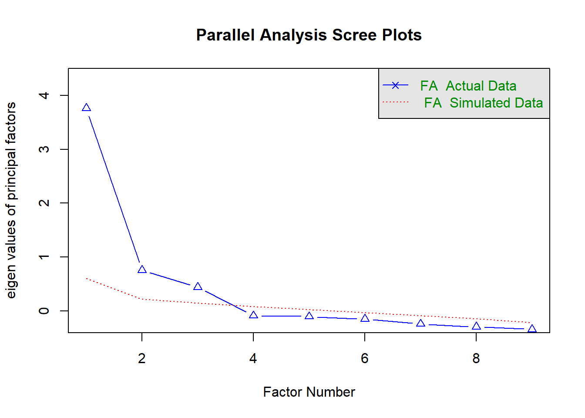
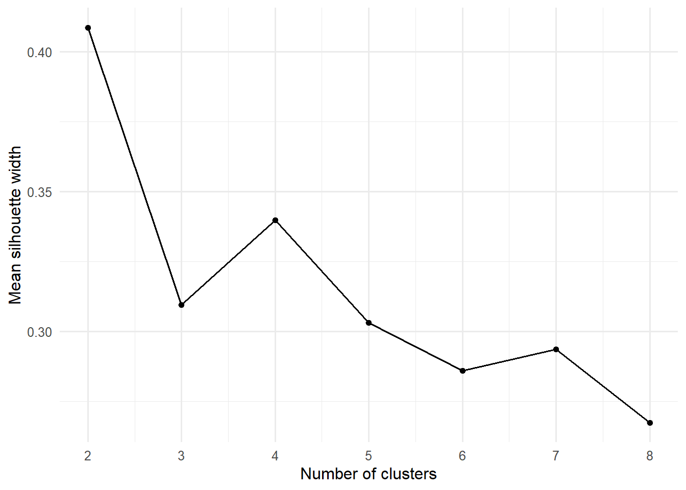
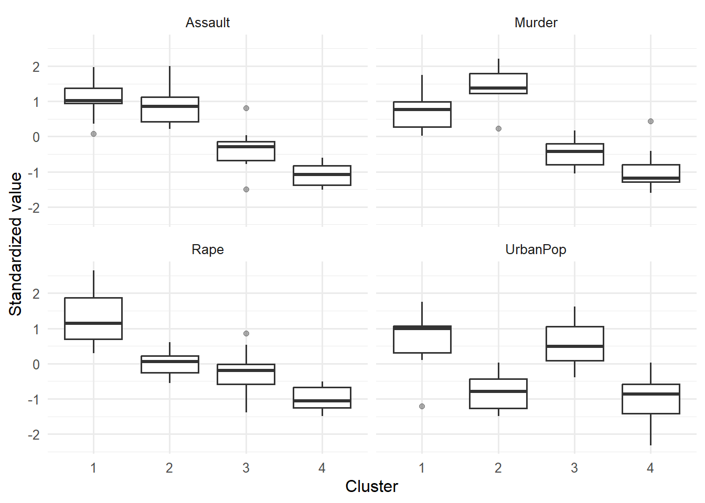

library(tidyverse)
library(lavaan)
library(psych)
theme_set(theme_minimal(base_size = 12))측정모형과 구조방정식
Reliability, EFA, CFA, SEM, Invariance, and an Optional Clustering Lab
이번 주 학습목표
지난주에는 설명 제공 → 투명성 → 신뢰라는 매개경로를 분석했습니다. 그때는 투명성과 신뢰를 이미 계산된 점수로 회귀식에 넣었습니다. 이번 주에는 한 단계 앞에서 시작합니다. 설문에 trust_1, trust_2, trust_3만 들어 있다면, 이 세 문항으로 ’신뢰’를 어떻게 측정할 수 있을까요?
이번 예제에서는 AI에 대한 신뢰, 유용성, 지속사용의도를 각각 문항 세 개로 측정합니다. 같은 아홉 문항으로 다음 질문에 차례로 답합니다.
| 질문 | 방법 |
|---|---|
| 신뢰 문항을 합한 점수는 얼마나 일관적인가? | 알파와 오메가 |
| 문항들은 데이터에서 몇 묶음으로 나타나는가? | 탐색적 요인분석(EFA) |
| 사전에 정한 세 개념과 문항의 연결이 자료와 얼마나 맞는가? | 확인적 요인분석(CFA) |
| 신뢰와 지속사용의도는 유용성을 거쳐 어떻게 관련되는가? | 구조방정식모형(SEM) |
| 초보자와 숙련자의 잠재평균을 비교할 수 있는가? | 측정동일성 |
측정모형은 문항과 개념의 관계를 설명합니다. 구조모형은 개념 사이의 관계를 설명합니다. CFA에서 문항이 개념을 어떻게 반영하는지 살펴보고, SEM에 그 측정식과 개념 사이의 회귀식을 함께 넣습니다.
1. 준비
한 번만 설치
install.packages(c(
"tidyverse", "lavaan", "psych",
"semTools", "semPlot", "cluster",
"factoextra", "mclust"
))기본 패키지
Part I. 측정모형을 먼저 생각하기
2. 관찰변수와 잠재변수
한 학생이 “AI를 믿을 수 있다”, “중요한 과업에 AI를 활용할 수 있다”, “AI의 판단에 의존할 수 있다”에 각각 5, 3, 4로 답했다고 합시다. 실제 기록된 응답은 관찰변수입니다. 세 응답을 통해 추론하려는 ’AI 신뢰’는 잠재변수입니다. 중요한 과업을 언급한 문항에는 위험을 피하려는 성향도 반영될 수 있습니다. 여기서 신뢰 요인이 설명하고 남은 부분을 그 문항의 잔차라고 부릅니다.
연속형 문항의 기본 측정식에서 \(i\)는 응답자, \(j\)는 문항입니다.
\[ X_{ij}=\nu_j+\lambda_j\eta_i+\epsilon_{ij} \]
| 기호 | 뜻 |
|---|---|
| \(X_{ij}\) | 응답자 \(i\)의 문항 \(j\) 점수 |
| \(\nu_j\) | 문항 절편. 잠재신뢰가 0인 사람의 기대 점수 |
| \(\eta_i\) | 응답자 \(i\)의 잠재신뢰 수준 |
| \(\lambda_j\) | 요인부하량. 잠재신뢰가 한 단위 높을 때 문항의 기대 점수가 얼마나 높아지는가 |
| \(\epsilon_{ij}\) | 실제 점수에서 모형의 예측 점수를 뺀 부분. 문항에 고유한 변동과 측정오차를 포함 |
표준화된 예에서 \(\nu_j=0\), \(\lambda_j=.80\)이고 잠재신뢰가 1이면 문항의 기대 점수는 \(.80\)입니다. 실제 점수가 \(1.10\)이면 잔차는 \(.30\)입니다. CFA에서는 응답자 전체의 문항 간 관계에서 부하량을 추정합니다. 그림에서 사각형은 관찰 문항, 타원은 잠재요인과 잔차입니다.
flowchart TD
T(("Trust")) --> T1["trust_1"]
T --> T2["trust_2"]
T --> T3["trust_3"]
E1(("e₁")) --> T1
E2(("e₂")) --> T2
E3(("e₃")) --> T3
문항 평균과 잠재변수 모형
앞의 세 응답을 평균 내면 4점입니다. 이 점수는 세 문항에 같은 가중치를 부여한 합성점수입니다. 잠재변수 모형에서는 문항별로 요인부하량과 잔차분산을 추정합니다. 구성개념 간 경로를 연구할 때는 이렇게 명시한 측정모형을 구조모형과 함께 적합할 수 있습니다.
| 접근 | 장점 | 한계 |
|---|---|---|
| 문항 평균 | 간단하고 재현하기 쉬움 | 측정오류와 문항별 loading 차이를 직접 모델링하지 않음 |
| CFA/SEM | loading·오차·잠재상관을 명시 | 더 많은 가정, 식별, 표본정보, 진단 필요 |
3. HCI 척도 데이터 생성
세 구성개념을 가정합니다.
- Trust: 시스템을 믿고 의존할 의향
- Usefulness: 시스템이 과업에 도움이 된다는 평가
- Continuance: 향후 계속 사용할 의도
set.seed(20261301)
n_sem <- 520
latent_data <- tibble(
participant_id = sprintf("S%03d", 1:n_sem),
expertise = factor(
sample(
c("Novice", "Experienced"),
n_sem,
replace = TRUE
)
),
trust_latent = rnorm(n_sem)
) |>
mutate(
usefulness_latent =
0.55 * trust_latent +
rnorm(n_sem, 0, sqrt(1 - 0.55^2)),
continuance_latent =
0.25 * trust_latent +
0.55 * usefulness_latent +
rnorm(n_sem, 0, 0.70)
)
make_indicator <- function(latent, loading) {
loading * latent +
rnorm(length(latent), 0, sqrt(1 - loading^2))
}
sem_continuous <- latent_data |>
transmute(
participant_id,
expertise,
trust_1 = make_indicator(trust_latent, 0.82),
trust_2 = make_indicator(trust_latent, 0.76),
trust_3 = make_indicator(trust_latent, 0.70),
useful_1 = make_indicator(usefulness_latent, 0.84),
useful_2 = make_indicator(usefulness_latent, 0.78),
useful_3 = make_indicator(usefulness_latent, 0.72),
continue_1 = make_indicator(continuance_latent, 0.86),
continue_2 = make_indicator(continuance_latent, 0.79),
continue_3 = make_indicator(continuance_latent, 0.73)
)
item_names <- c(
paste0("trust_", 1:3),
paste0("useful_", 1:3),
paste0("continue_", 1:3)
)
glimpse(sem_continuous)Rows: 520
Columns: 11
$ participant_id <chr> "S001", "S002", "S003", "S004", "S005", "S006", "S007",…
$ expertise <fct> Experienced, Experienced, Experienced, Experienced, Exp…
$ trust_1 <dbl> 1.5605917, -1.1198263, 0.3577587, -0.4151902, 0.9128743…
$ trust_2 <dbl> 2.41379915, 0.13449413, 0.72614768, -0.51680831, 0.1932…
$ trust_3 <dbl> 1.13638748, -0.07733045, -0.62109033, -0.36100661, 0.81…
$ useful_1 <dbl> -0.04436665, 0.67068635, 2.12169093, 0.53406020, 0.9349…
$ useful_2 <dbl> -0.10423952, -0.22037922, 1.42877212, -0.39769407, 3.05…
$ useful_3 <dbl> 0.78780436, -0.52480614, 0.40868216, 0.84085949, 0.9634…
$ continue_1 <dbl> 1.18812180, 0.43168268, 0.61820602, -0.72487210, 1.0417…
$ continue_2 <dbl> -0.5914039, -0.4242173, 0.1522465, 0.3225544, 1.4962088…
$ continue_3 <dbl> 0.4668279918, 0.5648361041, 0.5036873440, -0.0008743062…코드는 먼저 520명의 잠재신뢰를 만들고, 신뢰와 관련된 유용성, 두 변수와 관련된 지속사용의도를 차례로 만듭니다. make_indicator()는 잠재값에 문항별 계수를 곱하고 문항마다 독립적인 잔차를 더합니다. trust_1의 \(.82\)는 가상 데이터를 생성할 때 넣은 계수입니다. CFA에서 부하량을 추정할 때는 가상 잠재값을 입력으로 주지 않고 분석 표본의 문항 응답을 사용합니다.
5점 ordinal 응답 만들기
to_likert <- function(x) {
cut(
x,
breaks = c(-Inf, -1.0, -0.30, 0.30, 1.0, Inf),
labels = 1:5,
ordered_result = TRUE
)
}
sem_ordinal <- sem_continuous |>
mutate(
across(
all_of(item_names),
to_likert
)
)
sem_ordinal |>
select(all_of(item_names)) |>
glimpse()Rows: 520
Columns: 9
$ trust_1 <ord> 5, 1, 4, 2, 4, 1, 1, 4, 2, 4, 4, 5, 3, 2, 2, 1, 4, 4, 5, 1,…
$ trust_2 <ord> 5, 3, 4, 2, 3, 2, 2, 4, 1, 3, 5, 3, 2, 3, 4, 2, 3, 3, 3, 2,…
$ trust_3 <ord> 5, 3, 2, 2, 4, 3, 2, 3, 3, 2, 4, 4, 3, 3, 3, 2, 4, 5, 3, 1,…
$ useful_1 <ord> 3, 4, 5, 4, 4, 1, 3, 4, 1, 3, 2, 2, 3, 4, 1, 4, 4, 4, 4, 3,…
$ useful_2 <ord> 3, 3, 5, 2, 5, 1, 5, 2, 3, 4, 1, 2, 2, 2, 2, 5, 2, 4, 3, 3,…
$ useful_3 <ord> 4, 2, 4, 4, 4, 1, 4, 2, 3, 4, 1, 2, 2, 4, 3, 3, 2, 4, 4, 1,…
$ continue_1 <ord> 5, 4, 4, 2, 5, 1, 2, 5, 1, 4, 1, 4, 1, 3, 2, 3, 1, 3, 3, 1,…
$ continue_2 <ord> 2, 2, 3, 4, 5, 1, 4, 5, 1, 2, 1, 4, 4, 3, 4, 3, 4, 4, 1, 1,…
$ continue_3 <ord> 4, 4, 4, 3, 4, 1, 3, 5, 2, 2, 2, 4, 1, 2, 3, 4, 1, 3, 2, 1,…cut()은 연속형 점수를 네 개의 경계값으로 나눕니다. 예를 들어 원래 점수가 \(0\)이면 3점, \(.80\)이면 4점, \(1.20\)이면 5점입니다. 순서형 자료에는 범주 순서가 남습니다. 각 범주 안의 정확한 원래 값은 관찰되지 않습니다.
Note
실제 연구에서는 문항이 ordinal이라는 이유만으로 언제나 같은 estimator를 써야 하는 것이 아니라, 응답범주 수, 분포, 표본, 결측, 모형을 함께 고려합니다. 다만 ordinal endogenous indicator를 명시하면 lavaan은 WLSMV 계열로 전환합니다.
4. 탐색용 표본과 확인용 표본 분리
520명 중 260명은 EFA에서 문항 구조를 탐색하는 데, 나머지 260명은 CFA에서 정한 구조를 확인하는 데 사용합니다. 탐색 표본에는 우연히 생긴 패턴도 섞여 있으므로, 같은 표본에서 구조를 고르고 그 구조의 적합도를 평가하면 잘 맞아 보이기 쉽습니다. 사전에 문항 구조에 대한 가설이 명확한 연구라면 처음부터 CFA를 할 수 있습니다.
set.seed(20261302)
discovery_id <- sample(
sem_ordinal$participant_id,
size = floor(0.50 * nrow(sem_ordinal))
)
discovery_ordinal <- sem_ordinal |>
filter(participant_id %in% discovery_id)
confirmation_ordinal <- sem_ordinal |>
filter(!participant_id %in% discovery_id)
confirmation_continuous <- sem_continuous |>
filter(!participant_id %in% discovery_id)
c(
discovery = nrow(discovery_ordinal),
confirmation = nrow(confirmation_ordinal)
) discovery confirmation
260 260
Warning
표본분할이 불가능한 작은 자료라면 EFA 결과를 탐색적으로 표시하고, 독립 표본·후속연구에서 CFA를 수행하는 것이 더 정직합니다.
Part II. Reliability는 무엇을 말하는가?
5. Cronbach’s alpha
알파는 같은 척도에 넣은 문항들이 응답자 사이에서 얼마나 함께 움직이는지 보여주는 내적 일관성 지표입니다.
\[ \alpha=\frac{k}{k-1}\left(1-\frac{\sum_{j=1}^{k}s_j^2}{s_T^2}\right) \]
| 기호 | 계산 방법 |
|---|---|
| \(k\) | 합산한 문항 수. 신뢰 문항 세 개면 \(k=3\) |
| \(s_j^2\) | 여러 응답자에 걸쳐 계산한 문항 \(j\)의 분산 |
| \(\sum_{j=1}^k s_j^2\) | 문항별 분산을 각각 구한 뒤 더한 값 |
| \(s_T^2\) | 응답자마다 문항을 먼저 합산한 후 구한 총점 분산 |
| \(k/(k-1)\) | 문항 수에 따른 보정계수 |
두 분산이 왜 다른지 보려면 총점 \(T=X_1+\cdots+X_k\)의 분산을 펼쳐 보면 됩니다.
\[ s_T^2=\sum_{j=1}^k s_j^2+2\sum_{i<j}\operatorname{Cov}(X_i,X_j). \]
\(\sum_{i<j}\)는 서로 다른 문항의 쌍을 한 번씩 더한다는 뜻입니다. 신뢰가 높은 사람이 여러 문항에 함께 높게 답하면 문항 쌍의 공분산이 양수가 됩니다. 그 공분산이 총점 분산에 더해져서 \(\sum s_j^2/s_T^2\)가 작아지고 알파는 커집니다.
예를 들어 문항 세 개의 분산이 각각 1이고 세 문항 쌍의 공분산이 모두 \(.50\)이라면, 총점 분산은 \(3+2(.50+.50+.50)=6\)입니다. 따라서 \(\alpha=\frac32(1-\frac36)=.75\)입니다. 알파는 이 표본에서 계산한 척도 점수의 특성입니다.
Alpha가 높아도 별도로 확인할 질문
| 질문 | 신뢰 문항으로 생각해 보기 |
|---|---|
| 단일차원성 | 신뢰와 유용성이 서로 관련되면 두 개념의 문항을 섞어도 알파가 높을 수 있습니다. 요인분석으로 문항이 몇 개의 요인을 반영하는지 살펴봅니다. |
| 타당성 | ’답변이 빠르다’와 비슷한 문항이 함께 움직일 수 있습니다. 신뢰를 측정하려는 척도라면 문항 내용이 신뢰라는 정의와 맞는지도 확인합니다. |
| 문항의 비중복성 | ’AI를 믿는다’와 ’AI는 믿을 만하다’처럼 거의 같은 말을 반복하면 알파가 높아질 수 있습니다. 문항들이 개념의 필요한 범위를 담는지 확인합니다. |
| 집단 간 동일한 측정 | 초보자와 숙련자의 알파가 모두 높아도 ’AI에 의존한다’의 뜻이나 응답 기준이 다를 수 있습니다. 측정동일성을 별도로 살펴봅니다. |
| 개인 수준 점수의 정확성 | 개인의 4.0점과 4.2점을 구별할 수 있는지는 점수의 측정오차와 사용 목적에 달려 있습니다. |
| 잠재요인이 문항의 공통 원인인가 | 문항 표현이 비슷하거나 동의를 선호하는 응답 습관이 있어도 응답은 함께 움직일 수 있습니다. 잠재요인에 대한 해석에는 문항 설계와 측정모형의 근거가 필요합니다. |
문항이 하나의 공통요인을 같은 강도로 반영하고 잔차끼리 상관이 없는 모형에서는 알파를 합산점수의 신뢰도로 해석할 수 있습니다. 이때 문항 절편은 서로 달라도 됩니다. 부하량이 문항마다 다르면, 그 차이를 추정한 CFA로 오메가를 구할 수 있습니다.
계산
trust_items_numeric <- discovery_ordinal |>
transmute(
across(
starts_with("trust_"),
as.numeric
)
)
trust_alpha <- psych::alpha(
trust_items_numeric,
check.keys = FALSE
)
trust_alpha$total raw_alpha std.alpha G6(smc) average_r S/N ase mean sd
0.782325 0.782252 0.7068689 0.544935 3.592465 0.02338404 2.937179 1.058107
median_r
0.5341214출력의 raw_alpha는 문항의 원래 분산을 사용하고, std.alpha는 문항을 표준화하여 상관행렬로 계산합니다. 모의 문항은 모두 높은 점수가 높은 신뢰를 뜻합니다. 실제 설문에 역문항이 있다면 분석 전에 설문 설계에 따라 방향을 맞춥니다. 1–5점 역문항이라면 6 - x로 변환할 수 있습니다.
문항삭제보다 먼저 할 일
- 역문항 코딩 오류 확인
- 문항 내용과 구성개념 확인
- 문항분포와 ceiling/floor 확인
- 요인구조와 cross-loading 확인
- 하위집단별 다르게 작동하는 문항 확인
- 척도 사용 목적과 점수 산출방식 확인
Warning
alpha if item deleted가 조금 높아진다는 이유만으로 문항을 제거하지 않습니다. 내용타당도와 독립자료에서의 재현성을 함께 봅니다.
6. Omega와 composite reliability
오메가와 AVE는 CFA에서 추정한 부하량과 잔차분산으로 계산합니다. 아래 식은 표준화된 연속형 지표가 단일 요인을 반영하고 문항 잔차끼리 상관이 없는 경우입니다. \(\lambda_j\)는 문항 \(j\)의 표준화 부하량이고, \(\theta_j=1-\lambda_j^2\)는 그 문항의 잔차분산입니다.
\[ \omega=\frac{(\sum_{j=1}^k\lambda_j)^2} {(\sum_{j=1}^k\lambda_j)^2+\sum_{j=1}^k\theta_j} \qquad \mathrm{AVE}=\frac{\sum_{j=1}^k\lambda_j^2} {\sum_{j=1}^k\lambda_j^2+\sum_{j=1}^k\theta_j} =\frac{1}{k}\sum_{j=1}^k\lambda_j^2. \]
신뢰 문항 세 개의 부하량을 \(.80\), \(.70\), \(.60\)이라고 합시다.
- AVE는 문항별 설명 비율을 평균합니다. 신뢰가 설명하는 문항별 분산 비율은 \(.80^2=.64\), \(.70^2=.49\), \(.60^2=.36\)입니다. 평균은 \((.64+.49+.36)/3\approx .497\)입니다.
- 오메가는 총점의 공통요인 분산부터 계산합니다. 표준화한 세 문항의 측정식을 더하면 총점은 \(T=(.80+.70+.60)\eta+(\epsilon_1+\epsilon_2+\epsilon_3)\)입니다. 잠재신뢰 \(\eta\)가 1표준편차 높아지면 세 문항의 기대 점수가 각각 \(.80\), \(.70\), \(.60\)씩 높아져 총점의 기대값은 \(2.10\)만큼 높아집니다. 표준화한 신뢰 요인의 분산이 1이므로 신뢰가 설명하는 총점 분산은 \(2.10^2\times 1=4.41\)입니다.
- 총점의 전체 분산에서 그 몫을 구합니다. 문항의 잔차분산은 \(.36\), \(.51\), \(.64\)입니다. 잔차끼리 상관이 없으므로 합은 \(1.51\)입니다. 총점의 전체 분산은 \(4.41+1.51=5.92\)이고, \(\omega=4.41/5.92\approx .745\)입니다. 즉, 이 모형에서 사람들의 총점이 서로 다른 정도의 약 74.5%를 공통 신뢰 요인이 설명합니다.
AVE는 각각 제곱해 문항별 설명분산을 구합니다. 오메가는 합한 뒤 제곱해 같은 요인에 따라 문항들이 함께 움직이는 양까지 총점 분산에 반영합니다. 순서형 CFA에서는 등급 뒤에 가정한 연속형 응답과 실제 1–5점 합산점수의 척도를 구분해서 해석합니다. 아래 semTools 실습에서 이 차이를 다시 다룹니다.
Part III. Exploratory Factor Analysis
7. EFA의 목적
EFA는 문항 간 상관을 더 적은 수의 공통요인으로 설명합니다. “이 AI는 믿을 만한 도움을 준다”라는 문항은 신뢰와 유용성에 모두 걸릴 수 있습니다. 한 문항이 둘 이상의 요인을 반영하는 패턴을 교차부하(cross-loading)라고 합니다. EFA에서는 각 문항이 어느 요인에 걸리는지 폭넓게 살펴봅니다.
고유값과 요인 수
표준화 문항 6개의 상관행렬에는 전체 분산 6이 들어 있습니다. 고유값은 문항을 조합해 만든 서로 직교하는 방향마다 분산이 얼마나 놓여 있는지를 나타냅니다. 고유값이 \(2.8,\ 1.3,\ .9,\ .5,\ .3,\ .2\)이면 합은 6입니다. 앞의 두 값이 표준화 문항 한 개의 분산인 1을 넘으므로 카이저 기준(Eigenvalue > 1)은 2개를 후보로 제안합니다. 이 예의 값은 상관행렬의 고유값입니다. EFA에서 추출·회전한 요인의 부하량이나 요인별 설명분산과는 계산이 다릅니다.
세 번째 고유값이 표본을 다시 뽑았을 때 \(.99\)에서 \(1.01\)로 바뀌면 이 규칙이 고르는 요인 수는 2개에서 3개로 바뀝니다. 평행분석은 같은 표본 크기와 문항 수에서 우연으로 기대되는 고유값을 구하고 순서별로 실제 값과 비교합니다. 실제 세 번째 값은 무작위 자료의 세 번째 값과 비교합니다. 스크리 그림에서는 값이 급하게 떨어지다가 완만해지는 지점을 봅니다.
평행분석은 2개를, 척도 이론은 3개를 시사할 수 있습니다. 두 해를 적합해 보니 2요인에서는 유용성과 지속사용의도가 섞이고 3요인에서는 두 개념의 문항들이 내용에 맞게 나뉜다면 3개를 고려할 근거가 생깁니다. 세 번째 요인이 거의 같은 표현을 가진 소수 문항에만 의존한다면 그 요인이 별개의 개념을 나타내는지 살펴봅니다.
8. Ordinal 문항의 EFA
먼저 탐색 표본에서 다분상관(polychoric correlation)을 계산합니다. 두 5점 문항에서 1–1부터 5–5까지 각 응답 조합이 얼마나 자주 나왔는지 생각해 봅시다. 다분상관은 각 문항 뒤에 연속적인 응답 성향이 있고, 경계값에 따라 1–5 범주가 관찰된다고 가정해 두 성향의 상관을 추정합니다. 응답이 드문 범주가 많다면 문항별 빈도도 함께 살펴봅니다.
ordinal_for_efa <- discovery_ordinal |>
select(all_of(item_names)) |>
mutate(
across(everything(), as.numeric)
)
poly_result <- psych::polychoric(ordinal_for_efa)
poly_cor <- poly_result$rhoParallel analysis
psych::fa.parallel(
poly_cor,
n.obs = nrow(ordinal_for_efa),
fa = "fa",
fm = "minres",
n.iter = 100
)Warning in fa.stats(r = r, f = f, phi = phi, n.obs = n.obs, np.obs = np.obs, :
The estimated weights for the factor scores are probably incorrect. Try a
different factor score estimation method.
Warning in fa.stats(r = r, f = f, phi = phi, n.obs = n.obs, np.obs = np.obs, :
The estimated weights for the factor scores are probably incorrect. Try a
different factor score estimation method.
Parallel analysis suggests that the number of factors = 3 and the number of components = NA fa = "fa"는 공통요인 해를 기준으로 평행분석을 수행합니다. 이 코드는 관찰된 자료의 다분상관 행렬을 입력으로 사용합니다. 그림에서 관찰된 요인 값이 시뮬레이션 기준을 어느 순서까지 넘는지 본 뒤, 후보 요인 수의 해를 비교합니다.
Oblique rotation을 사용한 EFA
three_factor_efa <- psych::fa(
poly_cor,
nfactors = 3,
n.obs = nrow(ordinal_for_efa),
fm = "minres",
rotate = "oblimin"
)Loading required namespace: GPArotationprint(
three_factor_efa,
cut = 0.30,
sort = TRUE
)Factor Analysis using method = minres
Call: psych::fa(r = poly_cor, nfactors = 3, n.obs = nrow(ordinal_for_efa),
rotate = "oblimin", fm = "minres")
Standardized loadings (pattern matrix) based upon correlation matrix
item MR1 MR3 MR2 h2 u2 com
continue_1 7 0.90 0.82 0.18 1.0
continue_3 9 0.77 0.62 0.38 1.0
continue_2 8 0.76 0.59 0.41 1.0
useful_1 4 0.88 0.76 0.24 1.0
useful_2 5 0.75 0.58 0.42 1.0
useful_3 6 0.57 0.45 0.55 1.2
trust_1 1 0.81 0.65 0.35 1.0
trust_2 2 0.73 0.61 0.39 1.0
trust_3 3 0.72 0.52 0.48 1.1
MR1 MR3 MR2
SS loadings 2.09 1.77 1.75
Proportion Var 0.23 0.20 0.19
Cumulative Var 0.23 0.43 0.62
Proportion Explained 0.37 0.32 0.31
Cumulative Proportion 0.37 0.69 1.00
With factor correlations of
MR1 MR3 MR2
MR1 1.00 0.64 0.48
MR3 0.64 1.00 0.44
MR2 0.48 0.44 1.00
Mean item complexity = 1
Test of the hypothesis that 3 factors are sufficient.
df null model = 36 with the objective function = 4.24 with Chi Square = 1080.99
df of the model are 12 and the objective function was 0.1
The root mean square of the residuals (RMSR) is 0.02
The df corrected root mean square of the residuals is 0.03
The harmonic n.obs is 260 with the empirical chi square 5.32 with prob < 0.95
The total n.obs was 260 with Likelihood Chi Square = 24.92 with prob < 0.015
Tucker Lewis Index of factoring reliability = 0.963
RMSEA index = 0.064 and the 90 % confidence intervals are 0.027 0.1
BIC = -41.81
Fit based upon off diagonal values = 1
Measures of factor score adequacy
MR1 MR3 MR2
Correlation of (regression) scores with factors 0.95 0.92 0.91
Multiple R square of scores with factors 0.89 0.85 0.82
Minimum correlation of possible factor scores 0.79 0.71 0.65nfactors = 3은 후보 중 3요인 해를 적합한다는 뜻입니다. fm = "minres"는 모형이 재현하지 못한 상관 차이를 줄이는 추출법입니다. 회전은 추출한 요인들을 재표현해 부하량 패턴을 읽기 쉽게 만듭니다. 직교회전에서는 요인 간 상관이 0이고, oblimin 같은 사각회전은 요인 간 상관을 허용합니다. 신뢰와 유용성이 서로 관련될 수 있으므로 이 예에서는 사각회전을 씁니다.
한 문항의 부하량이 세 요인에 각각 \(.76\), \(.08\), \(.04\)라면 요인 1에 주로 걸립니다. \(.48\), \(.41\), \(.05\)라면 앞의 두 요인에 걸리는 이유를 문항 내용에서 살펴봅니다. cut = .30은 작은 부하량을 화면에서 가리는 옵션입니다. 요인 이름은 부하량이 큰 문항들이 공통으로 묻는 내용을 읽고 붙입니다.
Part IV. Confirmatory Factor Analysis
9. CFA 모형 명시
CFA에서는 어느 문항이 어느 요인을 측정하는지 먼저 정하고, 그 설계가 응답 패턴을 얼마나 잘 재현하는지 봅니다. 예제는 신뢰 문항 세 개가 신뢰를, 유용성 문항 세 개가 유용성을, 지속사용의도 문항 세 개가 지속사용의도를 반영하도록 지정합니다. trust_1에서 유용성으로의 교차부하는 이 모형에서 0으로 두지만, 신뢰와 유용성의 요인 상관은 허용합니다. 그래서 신뢰 문항과 유용성 문항이 어느 정도 함께 움직이는 패턴도 설명할 수 있습니다.
cfa_model <- '
trust =~ trust_1 + trust_2 + trust_3
usefulness =~ useful_1 + useful_2 + useful_3
continuance =~ continue_1 + continue_2 + continue_3
'lavaan syntax
| 기호 | 의미 | 예시 |
|---|---|---|
=~ |
latent variable을 indicators로 측정 | trust =~ trust_1 + trust_2 |
~ |
regression path | usefulness ~ trust |
~~ |
variance 또는 covariance | trust ~~ usefulness |
~ 1 |
intercept 또는 mean | trust_1 ~ 1 |
:= |
정의된 모수 | indirect := a*b |
=~는 왼쪽에 측정할 개념, 오른쪽에 그 개념을 반영하는 문항을 둡니다. usefulness ~ trust는 보통 R 회귀식처럼 오른쪽 신뢰로 왼쪽 유용성을 예측한다는 뜻입니다. 이 단계의 CFA 코드는 =~ 세 줄로 구성됩니다. 개념 간 회귀식은 뒤의 SEM에 들어갑니다.
10. Ordinal CFA: WLSMV
5점 응답을 순서형으로 다룰 때는 각 문항 뒤에 연속형 응답 성향 \(X_{ij}^{*}\)이 있다고 가정합니다. 처음 다룬 측정식을 이 성향에 적용하고, 성향이 속한 구간에 따라 관찰 범주가 결정되도록 둡니다.
\[ X_{ij}=c \quad \Longleftrightarrow \quad \tau_{j,c-1}<X_{ij}^{*}\leq \tau_{j,c}. \]
\(c\)는 관찰된 등급이고 \(\tau_{j,c}\)는 문항 \(j\)에서 등급 \(c\)와 \(c+1\)을 가르는 경계값(threshold)입니다. 예를 들어 3점 응답은 연속형 성향이 2–3점 경계와 3–4점 경계 사이에 있었다는 뜻입니다. 5개 범주에는 내부 경계가 4개 있습니다. 앞에서 시뮬레이션에 쓴 경계값은 데이터 생성용이며, 분석할 때는 문항별 경계값을 자료에서 추정합니다.
WLSMV는 관찰된 범주 빈도와 문항 간 연관성을 바탕으로 경계값과 상관에 관한 정보를 구하고, 그 정보에 맞게 모형을 적합합니다. 계수는 대각 가중최소제곱법으로 구하고, 표준오차와 모형 검정통계량에는 추가 보정을 적용합니다. ordered = item_names는 아홉 문항을 순서형으로 처리한다는 지정입니다. lavaan 순서형 자료 안내
cfa_fit <- cfa(
model = cfa_model,
data = confirmation_ordinal,
ordered = item_names,
estimator = "WLSMV",
std.lv = TRUE
)
summary(
cfa_fit,
fit.measures = TRUE,
standardized = TRUE
)lavaan 0.6-19 ended normally after 19 iterations
Estimator DWLS
Optimization method NLMINB
Number of model parameters 48
Number of observations 260
Model Test User Model:
Standard Scaled
Test Statistic 7.491 16.930
Degrees of freedom 24 24
P-value (Chi-square) 0.999 0.852
Scaling correction factor 0.569
Shift parameter 3.754
simple second-order correction
Model Test Baseline Model:
Test statistic 2184.687 1239.033
Degrees of freedom 36 36
P-value 0.000 0.000
Scaling correction factor 1.786
User Model versus Baseline Model:
Comparative Fit Index (CFI) 1.000 1.000
Tucker-Lewis Index (TLI) 1.012 1.009
Robust Comparative Fit Index (CFI) 1.000
Robust Tucker-Lewis Index (TLI) 1.012
Root Mean Square Error of Approximation:
RMSEA 0.000 0.000
90 Percent confidence interval - lower 0.000 0.000
90 Percent confidence interval - upper 0.000 0.029
P-value H_0: RMSEA <= 0.050 1.000 0.996
P-value H_0: RMSEA >= 0.080 0.000 0.000
Robust RMSEA 0.000
90 Percent confidence interval - lower 0.000
90 Percent confidence interval - upper 0.043
P-value H_0: Robust RMSEA <= 0.050 0.973
P-value H_0: Robust RMSEA >= 0.080 0.000
Standardized Root Mean Square Residual:
SRMR 0.023 0.023
Parameter Estimates:
Parameterization Delta
Standard errors Robust.sem
Information Expected
Information saturated (h1) model Unstructured
Latent Variables:
Estimate Std.Err z-value P(>|z|) Std.lv Std.all
trust =~
trust_1 0.792 0.046 17.133 0.000 0.792 0.792
trust_2 0.738 0.048 15.386 0.000 0.738 0.738
trust_3 0.721 0.049 14.781 0.000 0.721 0.721
usefulness =~
useful_1 0.824 0.036 23.115 0.000 0.824 0.824
useful_2 0.758 0.045 16.976 0.000 0.758 0.758
useful_3 0.700 0.046 15.128 0.000 0.700 0.700
continuance =~
continue_1 0.879 0.038 23.111 0.000 0.879 0.879
continue_2 0.745 0.040 18.679 0.000 0.745 0.745
continue_3 0.695 0.050 13.964 0.000 0.695 0.695
Covariances:
Estimate Std.Err z-value P(>|z|) Std.lv Std.all
trust ~~
usefulness 0.485 0.067 7.279 0.000 0.485 0.485
continuance 0.464 0.065 7.161 0.000 0.464 0.464
usefulness ~~
continuance 0.676 0.054 12.540 0.000 0.676 0.676
Thresholds:
Estimate Std.Err z-value P(>|z|) Std.lv Std.all
trust_1|t1 -1.239 0.104 -11.911 0.000 -1.239 -1.239
trust_1|t2 -0.365 0.080 -4.570 0.000 -0.365 -0.365
trust_1|t3 0.283 0.079 3.585 0.000 0.283 0.283
trust_1|t4 1.004 0.094 10.685 0.000 1.004 1.004
trust_2|t1 -1.087 0.097 -11.192 0.000 -1.087 -1.087
trust_2|t2 -0.385 0.080 -4.816 0.000 -0.385 -0.385
trust_2|t3 0.224 0.079 2.845 0.004 0.224 0.224
trust_2|t4 0.927 0.091 10.149 0.000 0.927 0.927
trust_3|t1 -1.160 0.100 -11.569 0.000 -1.160 -1.160
trust_3|t2 -0.427 0.081 -5.306 0.000 -0.427 -0.427
trust_3|t3 0.273 0.079 3.462 0.001 0.273 0.273
trust_3|t4 1.160 0.100 11.569 0.000 1.160 1.160
useful_1|t1 -1.123 0.099 -11.384 0.000 -1.123 -1.123
useful_1|t2 -0.385 0.080 -4.816 0.000 -0.385 -0.385
useful_1|t3 0.204 0.078 2.598 0.009 0.204 0.204
useful_1|t4 1.141 0.099 11.477 0.000 1.141 1.141
useful_2|t1 -0.855 0.089 -9.593 0.000 -0.855 -0.855
useful_2|t2 -0.314 0.079 -3.955 0.000 -0.314 -0.314
useful_2|t3 0.375 0.080 4.693 0.000 0.375 0.375
useful_2|t4 1.020 0.095 10.789 0.000 1.020 1.020
useful_3|t1 -1.020 0.095 -10.789 0.000 -1.020 -1.020
useful_3|t2 -0.385 0.080 -4.816 0.000 -0.385 -0.385
useful_3|t3 0.204 0.078 2.598 0.009 0.204 0.204
useful_3|t4 0.973 0.093 10.474 0.000 0.973 0.973
continue_1|t1 -0.927 0.091 -10.149 0.000 -0.927 -0.927
continue_1|t2 -0.273 0.079 -3.462 0.001 -0.273 -0.273
continue_1|t3 0.283 0.079 3.585 0.000 0.283 0.283
continue_1|t4 0.898 0.090 9.929 0.000 0.898 0.898
continue_2|t1 -1.020 0.095 -10.789 0.000 -1.020 -1.020
continue_2|t2 -0.314 0.079 -3.955 0.000 -0.314 -0.314
continue_2|t3 0.273 0.079 3.462 0.001 0.273 0.273
continue_2|t4 1.036 0.095 10.892 0.000 1.036 1.036
continue_3|t1 -0.988 0.093 -10.580 0.000 -0.988 -0.988
continue_3|t2 -0.263 0.079 -3.339 0.001 -0.263 -0.263
continue_3|t3 0.204 0.078 2.598 0.009 0.204 0.204
continue_3|t4 0.927 0.091 10.149 0.000 0.927 0.927
Variances:
Estimate Std.Err z-value P(>|z|) Std.lv Std.all
.trust_1 0.373 0.373 0.373
.trust_2 0.456 0.456 0.456
.trust_3 0.481 0.481 0.481
.useful_1 0.321 0.321 0.321
.useful_2 0.425 0.425 0.425
.useful_3 0.510 0.510 0.510
.continue_1 0.228 0.228 0.228
.continue_2 0.446 0.446 0.446
.continue_3 0.516 0.516 0.516
trust 1.000 1.000 1.000
usefulness 1.000 1.000 1.000
continuance 1.000 1.000 1.000
Note
Ordinal endogenous indicators에 ordered =를 지정하면 WLSMV 계열이 사용됩니다. 이 설정에서는 일반적인 ML 기반 FIML 결측처리를 그대로 사용할 수 없습니다.
11. 연속형 CFA: MLR와 FIML
이 코드는 같은 응답자들의 범주화하기 전 연속형 모의 자료를 사용합니다. MLR은 최대우도(ML)로 계수를 추정하고, 표준오차와 모형 검정통계량을 보정합니다. missing = "fiml"은 결측이 있을 때 각 응답자의 관측된 부분을 우도 계산에 활용하는 옵션입니다. 결측을 설명하는 변수가 모형에 적절히 포함된 MAR 등의 가정을 고려합니다. 이번 모의 자료에는 결측을 생성하지 않았습니다.
cfa_fit_mlr <- cfa(
model = cfa_model,
data = confirmation_continuous,
estimator = "MLR",
missing = "fiml",
std.lv = TRUE
)
summary(
cfa_fit_mlr,
fit.measures = TRUE,
standardized = TRUE
)lavaan 0.6-19 ended normally after 18 iterations
Estimator ML
Optimization method NLMINB
Number of model parameters 30
Number of observations 260
Number of missing patterns 1
Model Test User Model:
Standard Scaled
Test Statistic 16.048 16.790
Degrees of freedom 24 24
P-value (Chi-square) 0.886 0.857
Scaling correction factor 0.956
Yuan-Bentler correction (Mplus variant)
Model Test Baseline Model:
Test statistic 905.512 922.346
Degrees of freedom 36 36
P-value 0.000 0.000
Scaling correction factor 0.982
User Model versus Baseline Model:
Comparative Fit Index (CFI) 1.000 1.000
Tucker-Lewis Index (TLI) 1.014 1.012
Robust Comparative Fit Index (CFI) 1.000
Robust Tucker-Lewis Index (TLI) 1.012
Loglikelihood and Information Criteria:
Loglikelihood user model (H0) -2803.124 -2803.124
Scaling correction factor 1.016
for the MLR correction
Loglikelihood unrestricted model (H1) -2795.099 -2795.099
Scaling correction factor 0.989
for the MLR correction
Akaike (AIC) 5666.247 5666.247
Bayesian (BIC) 5773.068 5773.068
Sample-size adjusted Bayesian (SABIC) 5677.956 5677.956
Root Mean Square Error of Approximation:
RMSEA 0.000 0.000
90 Percent confidence interval - lower 0.000 0.000
90 Percent confidence interval - upper 0.024 0.029
P-value H_0: RMSEA <= 0.050 0.997 0.996
P-value H_0: RMSEA >= 0.080 0.000 0.000
Robust RMSEA 0.000
90 Percent confidence interval - lower 0.000
90 Percent confidence interval - upper 0.027
P-value H_0: Robust RMSEA <= 0.050 0.997
P-value H_0: Robust RMSEA >= 0.080 0.000
Standardized Root Mean Square Residual:
SRMR 0.022 0.022
Parameter Estimates:
Standard errors Sandwich
Information bread Observed
Observed information based on Hessian
Latent Variables:
Estimate Std.Err z-value P(>|z|) Std.lv Std.all
trust =~
trust_1 0.795 0.060 13.253 0.000 0.795 0.830
trust_2 0.688 0.055 12.550 0.000 0.688 0.693
trust_3 0.623 0.058 10.666 0.000 0.623 0.681
usefulness =~
useful_1 0.775 0.052 14.949 0.000 0.775 0.825
useful_2 0.760 0.052 14.560 0.000 0.760 0.764
useful_3 0.644 0.055 11.806 0.000 0.644 0.683
continuance =~
continue_1 0.844 0.050 16.983 0.000 0.844 0.861
continue_2 0.778 0.057 13.569 0.000 0.778 0.779
continue_3 0.673 0.059 11.461 0.000 0.673 0.668
Covariances:
Estimate Std.Err z-value P(>|z|) Std.lv Std.all
trust ~~
usefulness 0.506 0.065 7.782 0.000 0.506 0.506
continuance 0.467 0.066 7.044 0.000 0.467 0.467
usefulness ~~
continuance 0.657 0.051 12.840 0.000 0.657 0.657
Intercepts:
Estimate Std.Err z-value P(>|z|) Std.lv Std.all
.trust_1 0.085 0.059 1.423 0.155 0.085 0.088
.trust_2 0.070 0.062 1.135 0.256 0.070 0.070
.trust_3 0.034 0.057 0.603 0.547 0.034 0.037
.useful_1 0.021 0.058 0.365 0.715 0.021 0.023
.useful_2 -0.061 0.062 -0.987 0.323 -0.061 -0.061
.useful_3 0.041 0.058 0.702 0.483 0.041 0.044
.continue_1 0.009 0.061 0.143 0.886 0.009 0.009
.continue_2 0.060 0.062 0.971 0.332 0.060 0.060
.continue_3 0.018 0.062 0.292 0.770 0.018 0.018
Variances:
Estimate Std.Err z-value P(>|z|) Std.lv Std.all
.trust_1 0.285 0.055 5.144 0.000 0.285 0.311
.trust_2 0.513 0.058 8.865 0.000 0.513 0.520
.trust_3 0.449 0.064 6.987 0.000 0.449 0.537
.useful_1 0.282 0.043 6.526 0.000 0.282 0.319
.useful_2 0.412 0.050 8.280 0.000 0.412 0.416
.useful_3 0.474 0.046 10.323 0.000 0.474 0.533
.continue_1 0.247 0.051 4.821 0.000 0.247 0.258
.continue_2 0.394 0.049 7.990 0.000 0.394 0.394
.continue_3 0.562 0.062 9.111 0.000 0.562 0.554
trust 1.000 1.000 1.000
usefulness 1.000 1.000 1.000
continuance 1.000 1.000 1.000위의 WLSMV 예제는 1–5점 응답을 사용하고, 이 예제는 범주화 전 연속값을 사용합니다. 두 출력의 차이에는 입력 자료와 추정법이 모두 관여합니다. 실제 5점 문항을 연속형으로 근사하려면 응답 분포, 범주별 빈도, 결측, 분석 목적을 살펴 그 선택을 설명합니다. lavaan 추정법 안내
12. 모형 식별
잠재신뢰에는 관찰된 단위가 없습니다. 측정식에서 잠재신뢰를 두 배로 늘리고 요인부하량을 절반으로 줄이면, 두 값의 곱이 그대로여서 예측한 문항 점수도 같습니다. 예를 들어 \(.80\times 1=.40\times 2\)입니다. 데이터가 두 표현을 구별할 수 없으므로 분석에서는 잠재변수의 단위를 먼저 정합니다.
- 기준 문항 방식은 첫 번째 문항의 부하량을 1로 고정합니다. 그 문항의 단위가 요인의 기준이 됩니다.
- 요인분산 고정 방식은 CFA에서 요인분산을 1로 고정합니다. 이 예에서는
std.lv = TRUE로 지정합니다.
이것은 식별의 한 부분입니다. 모형 식별이란 자료에서 얻는 정보와 모형의 제약을 바탕으로 자유모수를 유일하게 추정할 수 있는지를 묻는 것입니다. 예를 들어 연속형 문항 세 개의 공분산만 이용하는 단일요인 CFA에서 요인분산을 1로 고정하면, 자료의 정보는 문항 분산 3개와 공분산 3개입니다. 자유롭게 추정할 부하량 3개와 잔차분산 3개도 합계 6개입니다. 일반적인 조건에서 이런 모형은 자유도가 0이라 전체 적합도로 단일요인 가정을 시험할 여유가 없습니다.
지표 수에 관한 주의
- 세 개 이상의 좋은 지표는 식별과 진단에 유리한 설계 권고다.
- 두 지표 factor도 추가 제약 아래 식별될 수 있지만 매우 제한적이고 취약하다.
- 세 지표가 있다는 이유만으로 내용타당도와 단일차원성이 보장되지 않는다.
- 지표 수보다 문항 품질, loading, 오차구조, 표본정보가 중요하다.
Warning
“잠재변수당 문항 3개”는 보편적 충분조건이 아닙니다. 나쁜 세 문항은 좋은 측정모형이 되지 않습니다.
13. 적합도 결과 읽기
신뢰 문항 두 개의 상관이 자료에서 \(.60\)이고 CFA 모형이 \(.55\)를 재현했다면, 해당 문항 쌍에서 재현하지 못한 차이는 \(.05\)입니다. 적합도는 모형이 여러 문항 쌍에서 이러한 관계를 전반적으로 얼마나 잘 재현하는지 평가합니다. 순서형 자료에서는 모형이 사용하는 경계값과 순서형 상관의 맥락에서 읽습니다.
| 지표 | 결과표를 읽는 질문 |
|---|---|
| \(\chi^2\), 자유도, \(p\)값 | 모형이 재현한 패턴과 자료의 차이가 정확 적합을 가정했을 때 기대되는 범위인가? |
| CFI·TLI | 문항 사이에 연관성이 없다고 보는 기준 모형보다 얼마나 더 잘 맞는가? TLI 계산에는 자유도도 반영됩니다. |
| RMSEA와 신뢰구간 | 모형의 자유도를 고려했을 때 근사적 차이는 어느 정도이고, 추정은 얼마나 정밀한가? |
| SRMR | 표준화된 척도에서 관찰 패턴과 모형 예측 간 차이의 전반적인 크기는 어느 정도인가? |
아래는 WLSMV 출력에서 보정된 검정통계량과 그에 대응하는 .scaled 적합도 지표를 꺼내는 코드입니다.
fit_summary <- fitMeasures(
cfa_fit,
c(
"chisq.scaled", "df.scaled", "pvalue.scaled",
"cfi.scaled", "tli.scaled",
"rmsea.scaled", "rmsea.ci.lower.scaled", "rmsea.ci.upper.scaled",
"srmr"
)
)
fit_summary chisq.scaled df.scaled pvalue.scaled
16.930 24.000 0.852
cfi.scaled tli.scaled rmsea.scaled
1.000 1.009 0.000
rmsea.ci.lower.scaled rmsea.ci.upper.scaled srmr
0.000 0.029 0.023 먼저 모형 계산이 수렴했는지와 경고가 있었는지 확인합니다. 다음으로 음의 잔차분산이나 범위를 벗어난 잠재상관 같은 부적절해를 확인합니다. 계산이 정상이어도 전체 적합도가 양호한 가운데 특정 문항 쌍의 잔차가 클 수 있으므로, 부하량과 잔차를 함께 읽습니다.
함께 볼 정보
- convergence와 warning
- improper solution: 음의 오차분산, 비정상적으로 큰 loading·상관
- factor loading과 CI
- 표준화 잔차
- factor correlation
- CFI/TLI
- RMSEA와 90% CI
- SRMR
- 이론적 단순성과 대안모형
절단값을 기계적으로 사용하지 않기
CFI, TLI, RMSEA, SRMR의 관례적 기준은 모형복잡성, 표본크기, loading, 지표 수, 자료분포에 따라 다르게 작동할 수 있습니다.
Important
“CFI가 .95를 넘었으므로 모형이 참이다” 또는 “RMSEA가 .08을 넘었으므로 척도가 무효다”라고 쓰지 않습니다. 여러 진단과 이론적 정합성을 함께 보고 판단합니다.
Chi-square의 해석
Chi-square는 모형이 모집단 공분산구조를 정확히 재현한다는 exact-fit 가설을 평가합니다.
- 큰 표본에서는 작은 차이도 검출할 수 있음
- 작은 표본에서는 큰 misspecification도 놓칠 수 있음
p > .05는 모형이 참일 확률이 높다는 뜻이 아님
14. Factor loadings와 factor correlations
standardized_loadings <- standardizedSolution(cfa_fit) |>
as_tibble() |>
filter(op == "=~") |>
select(
factor = lhs,
item = rhs,
estimate = est.std,
se, z, pvalue,
ci.lower, ci.upper
)
standardized_loadings# A tibble: 9 × 8
factor item estimate se z pvalue ci.lower ci.upper
<chr> <chr> <dbl> <dbl> <dbl> <dbl> <dbl> <dbl>
1 trust trust_1 0.792 0.0462 17.1 0 0.701 0.883
2 trust trust_2 0.738 0.0479 15.4 0 0.644 0.831
3 trust trust_3 0.721 0.0488 14.8 0 0.625 0.816
4 usefulness useful_1 0.824 0.0356 23.1 0 0.754 0.894
5 usefulness useful_2 0.758 0.0447 17.0 0 0.671 0.846
6 usefulness useful_3 0.700 0.0463 15.1 0 0.609 0.790
7 continuance continue_1 0.879 0.0380 23.1 0 0.804 0.953
8 continuance continue_2 0.745 0.0399 18.7 0 0.666 0.823
9 continuance continue_3 0.695 0.0498 14.0 0 0.598 0.793standardizedSolution()의 estimate에는 위 코드에서 이름을 바꾼 est.std가 들어 있습니다. 예를 들어 trust_1의 표준화 부하량이 \(.80\)이면, 신뢰가 1표준편차 높은 사람은 모형상 이 문항의 연속형 응답 성향이 \(.80\)표준편차 높습니다. 이 단일부하 모형에서는 \(.80^2=.64\)이므로 요인이 응답 성향의 분산 약 64%를 설명합니다. 순서형 CFA에서는 이 수치를 ’1–5점 응답이 .80점 상승한다’로 읽지 않습니다. 신뢰구간은 부하량 추정의 불확실성을 보여줍니다.
loading을 해석할 때
- 크기와 방향
- CI와 표본정밀도
- 문항 내용
- cross-loading 가능성
- 오차분산
- 집단별 차이
loading > .70 같은 문턱값은 참고일 뿐 자동 문항선택 규칙이 아닙니다.
잠재상관
latent_correlations <- lavInspect(
cfa_fit,
"cor.lv"
)
latent_correlations trust usflns cntnnc
trust 1.000
usefulness 0.485 1.000
continuance 0.464 0.676 1.000상관이 매우 높으면 다음을 질문합니다.
- 이론적으로 구별되는 구성개념인가?
- 문항 내용이 중복되는가?
- higher-order factor가 필요한가?
- 두 factor 모형과 한 factor 모형 중 어느 것이 더 타당한가?
15. Composite reliability와 AVE
semTools::compRelSEM(cfa_fit, ord.scale = TRUE) trust usefulness continuance
0.766 0.775 0.789 semTools::compRelSEM(cfa_fit, ord.scale = FALSE, obs.var = FALSE) trust usefulness continuance
0.795 0.806 0.819 semTools::AVE(cfa_fit) trust usefulness continuance
0.564 0.581 0.603 첫째 줄은 실제 1–5점 범주를 합산하는 점수의 합성신뢰도를 구합니다. 둘째 줄은 순서형 범주 뒤의 연속형 응답 척도에서, 모형이 재현하는 분산을 분모로 신뢰도를 계산합니다. 앞에서 손으로 계산한 오메가와 같은 형태는 둘째 줄에 해당합니다. 세 번째 줄의 AVE는 순서형 지표에 대해 다분상관을 바탕으로 계산하므로, 범주 점수 1–5의 분산을 직접 제곱하거나 평균하는 계산과는 다릅니다. 각 값을 보고할 때 어떤 척도를 대상으로 계산했는지 함께 적습니다. 합성신뢰도 함수 문서 · AVE 함수 문서
보고할 때는 다음을 함께 제시합니다.
- 사용한 점수모형과 estimator
- standardized loading
- composite reliability
- AVE
- latent correlations
- 척도의 내용적 근거
Warning
AVE의 제곱근과 요인상관을 비교하는 단일 규칙만으로 discriminant validity를 확정하지 않습니다. competing CFA model과 문항내용을 함께 검토합니다.
16. Residual과 modification index
lavResiduals(cfa_fit, type = "cor")$type
[1] "cor.bollen"
$cov
trst_1 trst_2 trst_3 usfl_1 usfl_2 usfl_3 cntn_1 cntn_2 cntn_3
trust_1 0.000
trust_2 0.011 0.000
trust_3 0.009 -0.028 0.000
useful_1 -0.017 0.030 0.012 0.000
useful_2 -0.022 -0.038 0.034 0.010 0.000
useful_3 0.027 -0.011 -0.017 0.008 -0.029 0.000
continue_1 0.000 0.074 0.009 -0.021 0.029 -0.021 0.000
continue_2 -0.049 -0.047 -0.009 -0.021 -0.003 0.022 0.004 0.000
continue_3 -0.008 -0.014 0.013 -0.010 -0.001 0.040 -0.031 0.031 0.000
$mean
trust_1 trust_2 trust_3 useful_1 useful_2 useful_3 continue_1
0 0 0 0 0 0 0
continue_2 continue_3
0 0
$th
trust_1|t1 trust_1|t2 trust_1|t3 trust_1|t4 trust_2|t1
0 0 0 0 0
trust_2|t2 trust_2|t3 trust_2|t4 trust_3|t1 trust_3|t2
0 0 0 0 0
trust_3|t3 trust_3|t4 useful_1|t1 useful_1|t2 useful_1|t3
0 0 0 0 0
useful_1|t4 useful_2|t1 useful_2|t2 useful_2|t3 useful_2|t4
0 0 0 0 0
useful_3|t1 useful_3|t2 useful_3|t3 useful_3|t4 continue_1|t1
0 0 0 0 0
continue_1|t2 continue_1|t3 continue_1|t4 continue_2|t1 continue_2|t2
0 0 0 0 0
continue_2|t3 continue_2|t4 continue_3|t1 continue_3|t2 continue_3|t3
0 0 0 0 0
continue_3|t4
0
$cov.z
trst_1 trst_2 trst_3 usfl_1 usfl_2 usfl_3 cntn_1 cntn_2 cntn_3
trust_1 0.000
trust_2 0.424 0.000
trust_3 0.401 -1.072 0.000
useful_1 -0.546 0.868 0.310 0.000
useful_2 -0.634 -1.042 0.867 0.421 0.000
useful_3 0.707 -0.312 -0.394 0.356 -0.934 0.000
continue_1 0.000 2.391 0.260 -0.820 1.064 -0.743 0.000
continue_2 -1.564 -1.311 -0.238 -0.776 -0.098 0.625 0.246 0.000
continue_3 -0.185 -0.314 0.271 -0.302 -0.022 0.978 -1.387 1.229 0.000
$mean.z
trust_1 trust_2 trust_3 useful_1 useful_2 useful_3 continue_1
0 0 0 0 0 0 0
continue_2 continue_3 <NA> <NA> <NA> <NA> <NA>
0 0 NA NA NA NA NA
<NA> <NA> <NA> <NA> <NA> <NA> <NA>
NA NA NA NA NA NA NA
<NA> <NA> <NA> <NA> <NA> <NA> <NA>
NA NA NA NA NA NA NA
<NA> <NA> <NA> <NA> <NA> <NA> <NA>
NA NA NA NA NA NA NA
<NA>
NA
$th.z
trust_1|t1 trust_1|t2 trust_1|t3 trust_1|t4 trust_2|t1
0 0 0 0 0
trust_2|t2 trust_2|t3 trust_2|t4 trust_3|t1 trust_3|t2
0 0 0 0 0
trust_3|t3 trust_3|t4 useful_1|t1 useful_1|t2 useful_1|t3
0 0 0 0 0
useful_1|t4 useful_2|t1 useful_2|t2 useful_2|t3 useful_2|t4
0 0 0 0 0
useful_3|t1 useful_3|t2 useful_3|t3 useful_3|t4 continue_1|t1
0 0 0 0 0
continue_1|t2 continue_1|t3 continue_1|t4 continue_2|t1 continue_2|t2
0 0 0 0 0
continue_2|t3 continue_2|t4 continue_3|t1 continue_3|t2 continue_3|t3
0 0 0 0 0
continue_3|t4
0
$summary
cor thresholds total
crmr 0.026 0.00 0.018
crmr.se 0.006 NA 0.004
crmr.exactfit.z 0.000 NA 0.000
crmr.exactfit.pvalue 0.500 NA 0.500
ucrmr 0.000 0.00 0.000
ucrmr.se 0.011 NA 0.005
ucrmr.ci.lower -0.018 NA -0.009
ucrmr.ci.upper 0.018 NA 0.009
ucrmr.closefit.h0.value 0.050 0.05 0.050
ucrmr.closefit.z -4.698 NA -9.416
ucrmr.closefit.pvalue 1.000 NA 1.000modindices(
cfa_fit,
sort. = TRUE,
maximum.number = 15
) lhs op rhs mi epc sepc.lv sepc.all sepc.nox
112 trust_2 ~~ continue_1 2.479 -0.101 -0.101 -0.315 -0.315
86 trust =~ continue_2 2.017 0.116 0.116 0.116 0.116
85 trust =~ continue_1 1.939 -0.128 -0.128 -0.128 -0.128
134 continue_1 ~~ continue_3 1.212 0.089 0.089 0.260 0.260
97 continuance =~ useful_1 0.894 0.145 0.145 0.145 0.145
106 trust_1 ~~ continue_2 0.875 0.062 0.062 0.153 0.153
94 continuance =~ trust_1 0.863 0.080 0.080 0.080 0.080
135 continue_2 ~~ continue_3 0.817 -0.063 -0.063 -0.131 -0.131
108 trust_2 ~~ trust_3 0.756 0.072 0.072 0.153 0.153
113 trust_2 ~~ continue_2 0.665 0.056 0.056 0.124 0.124
126 useful_2 ~~ useful_3 0.552 0.056 0.056 0.120 0.120
88 usefulness =~ trust_1 0.513 0.065 0.065 0.065 0.065
132 useful_3 ~~ continue_3 0.511 -0.050 -0.050 -0.097 -0.097
127 useful_2 ~~ continue_1 0.460 -0.046 -0.046 -0.149 -0.149
110 trust_2 ~~ useful_2 0.436 0.047 0.047 0.106 0.106lavResiduals()로 먼저 확인하는 것은 어느 문항 쌍에서 차이가 남았는가입니다. 예를 들어 “매일 쓰겠다”와 “내일도 쓰겠다”의 관찰 상관이 모형이 예측한 상관보다 높다면, 두 문항의 표현이 비슷한 이유가 있는지 읽어봅니다.
수정지수(MI)는 현재 0으로 고정된 모수를 하나 풀었을 때 모형 검정통계량이 얼마나 감소할지 근사합니다. epc는 그 모수를 풀면 추정값이 어느 정도일지 알려줍니다. 두 문항의 잔차공분산에 큰 MI가 나타나도, 이 결과는 그 표본에서 찾은 진단 단서입니다. 문항 내용상 이유를 설명하고 수정 전후를 기록한 뒤, 가능하면 다른 표본에서 확인합니다.
Modification index를 보기 전에
- 이론적으로 가능한 cross-loading을 사전에 적는다.
- 방법효과, 역문항, 유사한 표현을 확인한다.
- 오차공분산을 허용할 실질적 이유가 있는지 확인한다.
- 수정모형을 독립자료에서 검증할 계획을 세운다.
가장 큰 modification index부터 오차공분산을 추가하면 표본특이적 overfitting이 발생합니다. 최종 모형만 보고하면 탐색과 확증의 경계도 사라집니다.
Part V. Structural Equation Model
17. 측정모형과 구조모형 결합
이론가설:
- Trust가 Usefulness를 높인다.
- Usefulness가 Continuance를 높인다.
- Trust는 Continuance에 직접효과도 가진다.
flowchart LR
T(("Trust")) -->|"a"| U(("Usefulness"))
U -->|"b"| C(("Continuance"))
T -->|"c′"| C
지난주 매개분석에서 한 일은 \(a\)와 \(b\)를 구해 간접효과 \(ab\)를 계산하는 것이었습니다. 이번에도 그 계산은 같습니다. 이번 코드에서는 신뢰, 유용성, 지속사용의도를 각 문항의 평균으로 미리 계산하는 대신, 세 개념의 측정식과 개념 간 경로를 한 모형 안에 적합합니다.
잠재신뢰를 \(T\), 잠재유용성을 \(U\), 잠재지속사용의도를 \(C\)라고 쓰면 구조식은 다음과 같습니다. 절편은 생략했습니다.
\[ \begin{aligned} U &= aT + \zeta_U, \\ C &= bU + c'T + \zeta_C. \end{aligned} \]
\(\zeta_U\)와 \(\zeta_C\)는 각각 구조식의 예측변수로 설명되지 않은 잠재유용성과 잠재지속사용의도의 변동입니다. 첫째 식을 둘째 식의 \(U\)에 대입하면 \(T\)에 곱해지는 항은 \(ab+c'\)입니다. 따라서 모형에서 \(ab\)는 유용성을 거치는 간접경로, \(c'\)는 유용성을 포함한 상태에서의 직접경로, 둘의 합은 전체 경로입니다.
lavaan model
sem_model <- '
# measurement model
trust =~ trust_1 + trust_2 + trust_3
usefulness =~ useful_1 + useful_2 + useful_3
continuance =~ continue_1 + continue_2 + continue_3
# structural model
usefulness ~ a*trust
continuance ~ b*usefulness + cp*trust
# indirect and total effects
indirect := a*b
total := cp + (a*b)
'sem_fit <- sem(
model = sem_model,
data = confirmation_ordinal,
ordered = item_names,
estimator = "WLSMV",
std.lv = TRUE
)
summary(
sem_fit,
fit.measures = TRUE,
standardized = TRUE,
rsquare = TRUE
)lavaan 0.6-19 ended normally after 23 iterations
Estimator DWLS
Optimization method NLMINB
Number of model parameters 48
Number of observations 260
Model Test User Model:
Standard Scaled
Test Statistic 7.491 16.930
Degrees of freedom 24 24
P-value (Chi-square) 0.999 0.852
Scaling correction factor 0.569
Shift parameter 3.754
simple second-order correction
Model Test Baseline Model:
Test statistic 2184.687 1239.033
Degrees of freedom 36 36
P-value 0.000 0.000
Scaling correction factor 1.786
User Model versus Baseline Model:
Comparative Fit Index (CFI) 1.000 1.000
Tucker-Lewis Index (TLI) 1.012 1.009
Robust Comparative Fit Index (CFI) 1.000
Robust Tucker-Lewis Index (TLI) 1.012
Root Mean Square Error of Approximation:
RMSEA 0.000 0.000
90 Percent confidence interval - lower 0.000 0.000
90 Percent confidence interval - upper 0.000 0.029
P-value H_0: RMSEA <= 0.050 1.000 0.996
P-value H_0: RMSEA >= 0.080 0.000 0.000
Robust RMSEA 0.000
90 Percent confidence interval - lower 0.000
90 Percent confidence interval - upper 0.043
P-value H_0: Robust RMSEA <= 0.050 0.973
P-value H_0: Robust RMSEA >= 0.080 0.000
Standardized Root Mean Square Residual:
SRMR 0.023 0.023
Parameter Estimates:
Parameterization Delta
Standard errors Robust.sem
Information Expected
Information saturated (h1) model Unstructured
Latent Variables:
Estimate Std.Err z-value P(>|z|) Std.lv Std.all
trust =~
trust_1 0.792 0.046 17.133 0.000 0.792 0.792
trust_2 0.738 0.048 15.386 0.000 0.738 0.738
trust_3 0.721 0.049 14.781 0.000 0.721 0.721
usefulness =~
useful_1 0.721 0.044 16.344 0.000 0.824 0.824
useful_2 0.663 0.046 14.286 0.000 0.758 0.758
useful_3 0.612 0.045 13.617 0.000 0.700 0.700
continuance =~
continue_1 0.633 0.052 12.263 0.000 0.879 0.879
continue_2 0.536 0.041 13.122 0.000 0.745 0.745
continue_3 0.501 0.045 11.040 0.000 0.695 0.695
Regressions:
Estimate Std.Err z-value P(>|z|) Std.lv Std.all
usefulness ~
trust (a) 0.554 0.100 5.569 0.000 0.485 0.485
continuance ~
usefulnss (b) 0.716 0.125 5.726 0.000 0.590 0.590
trust (cp) 0.247 0.110 2.247 0.025 0.178 0.178
Thresholds:
Estimate Std.Err z-value P(>|z|) Std.lv Std.all
trust_1|t1 -1.239 0.104 -11.911 0.000 -1.239 -1.239
trust_1|t2 -0.365 0.080 -4.570 0.000 -0.365 -0.365
trust_1|t3 0.283 0.079 3.585 0.000 0.283 0.283
trust_1|t4 1.004 0.094 10.685 0.000 1.004 1.004
trust_2|t1 -1.087 0.097 -11.192 0.000 -1.087 -1.087
trust_2|t2 -0.385 0.080 -4.816 0.000 -0.385 -0.385
trust_2|t3 0.224 0.079 2.845 0.004 0.224 0.224
trust_2|t4 0.927 0.091 10.149 0.000 0.927 0.927
trust_3|t1 -1.160 0.100 -11.569 0.000 -1.160 -1.160
trust_3|t2 -0.427 0.081 -5.306 0.000 -0.427 -0.427
trust_3|t3 0.273 0.079 3.462 0.001 0.273 0.273
trust_3|t4 1.160 0.100 11.569 0.000 1.160 1.160
useful_1|t1 -1.123 0.099 -11.384 0.000 -1.123 -1.123
useful_1|t2 -0.385 0.080 -4.816 0.000 -0.385 -0.385
useful_1|t3 0.204 0.078 2.598 0.009 0.204 0.204
useful_1|t4 1.141 0.099 11.477 0.000 1.141 1.141
useful_2|t1 -0.855 0.089 -9.593 0.000 -0.855 -0.855
useful_2|t2 -0.314 0.079 -3.955 0.000 -0.314 -0.314
useful_2|t3 0.375 0.080 4.693 0.000 0.375 0.375
useful_2|t4 1.020 0.095 10.789 0.000 1.020 1.020
useful_3|t1 -1.020 0.095 -10.789 0.000 -1.020 -1.020
useful_3|t2 -0.385 0.080 -4.816 0.000 -0.385 -0.385
useful_3|t3 0.204 0.078 2.598 0.009 0.204 0.204
useful_3|t4 0.973 0.093 10.474 0.000 0.973 0.973
continue_1|t1 -0.927 0.091 -10.149 0.000 -0.927 -0.927
continue_1|t2 -0.273 0.079 -3.462 0.001 -0.273 -0.273
continue_1|t3 0.283 0.079 3.585 0.000 0.283 0.283
continue_1|t4 0.898 0.090 9.929 0.000 0.898 0.898
continue_2|t1 -1.020 0.095 -10.789 0.000 -1.020 -1.020
continue_2|t2 -0.314 0.079 -3.955 0.000 -0.314 -0.314
continue_2|t3 0.273 0.079 3.462 0.001 0.273 0.273
continue_2|t4 1.036 0.095 10.892 0.000 1.036 1.036
continue_3|t1 -0.988 0.093 -10.580 0.000 -0.988 -0.988
continue_3|t2 -0.263 0.079 -3.339 0.001 -0.263 -0.263
continue_3|t3 0.204 0.078 2.598 0.009 0.204 0.204
continue_3|t4 0.927 0.091 10.149 0.000 0.927 0.927
Variances:
Estimate Std.Err z-value P(>|z|) Std.lv Std.all
.trust_1 0.373 0.373 0.373
.trust_2 0.456 0.456 0.456
.trust_3 0.481 0.481 0.481
.useful_1 0.321 0.321 0.321
.useful_2 0.425 0.425 0.425
.useful_3 0.510 0.510 0.510
.continue_1 0.228 0.228 0.228
.continue_2 0.446 0.446 0.446
.continue_3 0.516 0.516 0.516
trust 1.000 1.000 1.000
.usefulness 1.000 0.765 0.765
.continuance 1.000 0.519 0.519
R-Square:
Estimate
trust_1 0.627
trust_2 0.544
trust_3 0.519
useful_1 0.679
useful_2 0.575
useful_3 0.490
continue_1 0.772
continue_2 0.554
continue_3 0.484
usefulness 0.235
continuance 0.481
Defined Parameters:
Estimate Std.Err z-value P(>|z|) Std.lv Std.all
indirect 0.397 0.097 4.075 0.000 0.286 0.286
total 0.644 0.114 5.643 0.000 0.464 0.464주요 경로와 defined parameters
sem_parameters <- parameterEstimates(
sem_fit,
standardized = TRUE,
ci = TRUE
) |>
filter(op %in% c("~", ":=")) |>
select(
lhs, op, rhs,
est, se, ci.lower, ci.upper,
std.all, pvalue
)
sem_parameters lhs op rhs est se ci.lower ci.upper std.all pvalue
1 usefulness ~ trust 0.554 0.100 0.359 0.749 0.485 0.000
2 continuance ~ usefulness 0.716 0.125 0.471 0.962 0.590 0.000
3 continuance ~ trust 0.247 0.110 0.032 0.463 0.178 0.025
4 indirect := a*b 0.397 0.097 0.206 0.588 0.286 0.000
5 total := cp+(a*b) 0.644 0.114 0.421 0.868 0.464 0.000계산 예시로, 비표준화 경로가 \(a=.55\), \(b=.72\), \(c'=.25\)로 나왔다면, 간접효과는 \(.55\times .72=.396\), 전체 효과는 \(.25+.396=.646\)입니다. :=는 같은 모형에서 추정한 계수로 이 값을 계산하는 문법입니다. 출력의 est는 비표준화 추정치이고, ci.lower와 ci.upper는 신뢰구간입니다. 간접효과의 구간을 확인할 때는 a와 b의 유의성을 각각 보는 데 그치지 말고 indirect 행을 읽습니다.
SEM은 모형의 형태이고 WLSMV는 이 순서형 자료에서 계수를 구하는 추정법입니다. 지난주처럼 관찰 점수로 단순 선형 매개모형을 적합하면, 같은 완전 관측자료와 통상적인 제약 아래 방정식별 OLS와 공동 ML 적합에서 같은 경로계수 점추정치를 얻을 수 있습니다. 부트스트랩을 사용하는 분석에서는 매 재표본에서 두 경로를 다시 추정한 뒤 같은 표본에서 나온 \(a^*\)와 \(b^*\)를 곱합니다. 이 예제의 WLSMV 코드는 부트스트랩을 요청하지 않습니다.
Warning
SEM의 단방향 화살표는 연구자의 모형명세입니다. Cross-sectional covariance만으로 시간순서와 인과방향이 입증되지는 않습니다.
18. Competing models
이론적으로 가능한 대안모형을 비교할 수 있습니다.
- Direct-only model
- Full mediation model
- Partial mediation model
- Reverse-path model
- One-factor measurement model
- Higher-order model
Note
적합도가 가장 좋은 모형이 곧 참인 이론은 아닙니다. 관측 공분산만으로 구분되지 않는 equivalent model이 존재할 수 있습니다.
full_mediation_model <- '
trust =~ trust_1 + trust_2 + trust_3
usefulness =~ useful_1 + useful_2 + useful_3
continuance =~ continue_1 + continue_2 + continue_3
usefulness ~ a*trust
continuance ~ b*usefulness
indirect := a*b
'
full_mediation_fit <- sem(
full_mediation_model,
data = confirmation_ordinal,
ordered = item_names,
estimator = "WLSMV",
std.lv = TRUE
)예제의 완전매개 모형은 부분매개 모형에서 직접경로 \(c'\)를 0으로 고정한 것입니다. 자유롭게 추정하던 모수에 제약을 추가했으므로 두 모형은 중첩됩니다. 같은 자료로 적합한 두 모형을 WLSMV로 비교할 때는 각 출력의 보정된 \(\chi^2\)를 단순히 빼지 않고, lavaan::lavTestLRT(full_mediation_fit, sem_fit)처럼 추정법에 맞는 차이 검정을 사용합니다. 두 모형의 잔차, 직접경로의 추정치와 신뢰구간, 연구 가설도 함께 봅니다. 가령 단면 데이터에서 방향을 달리한 경로도가 같은 상관구조를 재현할 수 있다면 적합도만으로 방향을 선택하기 어렵습니다.
Part VI. Measurement Invariance
19. 왜 동일성이 필요한가?
초보자와 숙련자의 평균 응답을 비교한다고 합시다. 두 집단의 잠재신뢰가 같지만, 숙련자가 “이 AI에 의존할 수 있다”에 더 엄격하게 답한다면 설문 평균에는 응답 기준의 차이도 반영됩니다. 측정동일성에서는 어떤 측정 모수를 두 집단에서 같게 두어도 자료와 크게 어긋나지 않는지 확인합니다. 다음 표는 연속형 문항의 예입니다.
| 단계 | 집단 간에 같게 두는 것 | 무엇을 확인하는가 |
|---|---|---|
| 형태 동일성(Configural) | 문항과 요인의 연결 패턴 | 두 집단에서 같은 문항들이 신뢰·유용성·지속사용의도에 각각 연결되는가? |
| 부하량 동일성(Metric) | 연결 패턴과 요인부하량 | 잠재신뢰가 한 단위 높을 때 문항의 기대 응답이 두 집단에서 같은 폭으로 변하는가? 관계나 경로를 비교할 때 공통 단위의 근거가 됩니다. |
| 절편 동일성(Scalar) | 연결 패턴, 부하량, 문항 절편 | 잠재신뢰가 같은 두 사람의 문항 기대점수가 같은가? 잠재평균 비교의 근거가 됩니다. |
| 엄격 동일성(Strict) | 위의 제약과 문항 잔차분산 | 요인으로 설명하고 남은 문항 변동의 크기도 두 집단에서 같은가? |
측정식에서 부하량 \(\lambda_j\)는 문항의 변화 폭, 절편 \(\nu_j\)는 잠재요인이 0일 때의 기대 점수였습니다. 순서형 자료는 문항 절편 대신 응답 범주가 바뀌는 경계값(threshold)을 중심으로 검토하며, 구체적인 제약 순서는 모형의 식별 방식에 따라 달라집니다.
20. 연속형 자료로 invariance workflow 보기
configural_fit <- cfa(
cfa_model,
data = sem_continuous,
group = "expertise",
estimator = "MLR",
missing = "fiml",
std.lv = TRUE
)
metric_fit <- cfa(
cfa_model,
data = sem_continuous,
group = "expertise",
group.equal = "loadings",
estimator = "MLR",
missing = "fiml",
std.lv = TRUE
)
scalar_fit <- cfa(
cfa_model,
data = sem_continuous,
group = "expertise",
group.equal = c("loadings", "intercepts"),
estimator = "MLR",
missing = "fiml",
std.lv = TRUE
)세 모형 모두 expertise로 집단을 나눕니다. 첫 모형은 같은 문항 배치로 적합하고, 둘째는 부하량을 같게 묶으며, 셋째는 절편까지 묶습니다. 이 가상 자료의 집단은 문항 생성 과정과 독립적으로 배정했으므로, 모집단에서의 집단 차이를 별도로 심어 놓지 않았습니다.
Fit dashboard
extract_invariance_fit <- function(fit, model_name) {
tibble(
model = model_name,
cfi = fitMeasures(fit, "cfi"),
tli = fitMeasures(fit, "tli"),
rmsea = fitMeasures(fit, "rmsea"),
srmr = fitMeasures(fit, "srmr")
)
}
bind_rows(
extract_invariance_fit(configural_fit, "Configural"),
extract_invariance_fit(metric_fit, "Metric"),
extract_invariance_fit(scalar_fit, "Scalar")
)New names:
New names:
New names:
New names:
• `cfi` -> `cfi...1`
• `cfi` -> `cfi...2`
• `cfi` -> `cfi...3`# A tibble: 3 × 5
model cfi tli rmsea srmr
<chr> <lvn.vctr> <lvn.vctr> <lvn.vctr> <lvn.vctr>
1 Configural 1 1.004012 0 0.02383167
2 Metric 1 1.005927 0 0.02833497
3 Scalar 1 1.006365 0 0.02961255lavTestLRT(
configural_fit,
metric_fit,
scalar_fit
)
Scaled Chi-Squared Difference Test (method = "satorra.bentler.2001")
lavaan->lavTestLRT():
lavaan NOTE: The "Chisq" column contains standard test statistics, not the
robust test that should be reported per model. A robust difference test is
a function of two standard (not robust) statistics.
Df AIC BIC Chisq Chisq diff Df diff Pr(>Chisq)
configural_fit 48 11343 11598 42.867
metric_fit 54 11334 11563 45.469 2.5191 6 0.8663
scalar_fit 60 11326 11530 49.820 4.3877 6 0.6244제약을 추가할 때 결과가 어떻게 달라지는지 봅니다. 예를 들어 부하량을 묶을 때 변화는 작지만 절편을 묶었을 때 변화가 크다면, 어느 문항에서 같은 잠재수준의 기대 점수가 집단별로 다른지 확인합니다. 일부 문항의 제약을 풀어 비교하는 부분 동일성을 검토할 때는 어떤 문항을 풀었고 어떤 문항들이 공통 척도의 기준으로 남는지 보고합니다.
해석 원칙
- chi-square difference 하나만 사용하지 않는다.
- CFI/RMSEA/SRMR 변화와 parameter 차이를 함께 본다.
- 집단별 표본크기와 문항분포를 확인한다.
- partial invariance를 사용할 경우 자유롭게 한 제약과 이론적 이유를 공개한다.
- 동일성이 부족하면 latent mean 차이를 단순 비교하지 않는다.
Warning
집단별 alpha가 비슷하다고 measurement invariance가 입증되는 것은 아닙니다.
21. 표본크기: “SEM은 200명” 규칙을 넘어서기
필요한 정보량은 다음에 따라 달라집니다.
- latent factor 수와 지표 수
- loading 크기
- 구조경로 수
- 지표의 범주 수와 분포
- 결측률
- 집단 수
- 간접효과·interaction의 크기
- estimator
- 원하는 CI 폭과 검정력
가장 좋은 방법 중 하나는 예상 모수와 결측·비정규성을 반영한 Monte Carlo simulation입니다.
예를 들어 관심이 작은 간접효과 \(ab\)라면, 전체 표본 200명이라는 숫자보다 두 경로 크기, 신뢰도, 결측률에 따라 간접효과 신뢰구간이 얼마나 넓어지는지가 중요합니다. Monte Carlo 계획에서는 이 조건을 반영해 가상 표본을 여러 번 만들고, 각 표본에 실제 연구에서 사용할 모형을 적합합니다. 표본 크기별로 계산이 정상적으로 끝나는 빈도, 추정치가 생성값에 얼마나 가까운지, 신뢰구간이 생성값을 포함하는 비율, 관심 효과를 검출하는 비율을 비교합니다.
# 1. plausible population model을 명시한다.
# 2. 후보 sample size마다 여러 자료를 생성한다.
# 3. 매 자료에 같은 분석모형을 적합한다.
# 4. convergence, bias, CI coverage, power를 요약한다.
# 5. 가장 작은 효과와 가장 어려운 조건을 기준으로 계획한다.Optional Appendix. Clustering을 현대적으로 감사하기
원 자료의 clustering 실습은 유지하되, SEM과 clustering이 서로 다른 질문에 답한다는 점을 분명히 합니다.
- SEM: 이론적으로 명시한 latent structure와 관계 평가
- Clustering: 관측값의 거리·유사성에 기반한 탐색적 그룹화
Important
Cluster는 데이터 안에서 만든 요약이지 자연적으로 존재하는 사람 “유형”의 증거가 아닙니다. 알고리즘, 변수선택, scaling, k에 따라 membership이 달라질 수 있습니다.
22. K-means 준비
data("USArrests")
crime <- USArrests |>
as.data.frame() |>
rownames_to_column("state") |>
as_tibble()
crime# A tibble: 50 × 5
state Murder Assault UrbanPop Rape
<chr> <dbl> <int> <int> <dbl>
1 Alabama 13.2 236 58 21.2
2 Alaska 10 263 48 44.5
3 Arizona 8.1 294 80 31
4 Arkansas 8.8 190 50 19.5
5 California 9 276 91 40.6
6 Colorado 7.9 204 78 38.7
7 Connecticut 3.3 110 77 11.1
8 Delaware 5.9 238 72 15.8
9 Florida 15.4 335 80 31.9
10 Georgia 17.4 211 60 25.8
# ℹ 40 more rowsK-means는 관측치를 가까운 중심에 배정하고, 각 군집의 평균으로 중심을 다시 계산합니다. 이 자료에서 UrbanPop은 도시 인구 비율이고 Assault는 인구 10만 명당 폭행 체포 건수입니다. 단위와 점수의 변동폭이 다르면 제곱거리에 미치는 영향도 달라집니다. scale()로 변수별 평균을 빼고 표준편차로 나누면 한 변수에서의 1표준편차 차이를 다른 변수의 1표준편차 차이와 같은 단위로 비교할 수 있습니다.
crime_matrix <- crime |>
select(-state) |>
scale()
crime_scaled <- as_tibble(
crime_matrix,
.name_repair = "minimal"
)
Warning
Z-score scaling은 기본 출발점일 뿐입니다. 극단값, 비대칭분포, 변수의 실질적 중요도, mixed data type을 고려해야 합니다.
23. k 후보 비교
evaluate_k <- function(k, x) {
set.seed(1000 + k)
fit <- kmeans(
x,
centers = k,
nstart = 50,
iter.max = 100
)
silhouette_width <- cluster::silhouette(
fit$cluster,
dist(x)
)[, "sil_width"]
tibble(
k = k,
total_withinss = fit$tot.withinss,
mean_silhouette = mean(silhouette_width)
)
}
k_audit <- map_dfr(
2:8,
evaluate_k,
x = crime_matrix
)
k_audit# A tibble: 7 × 3
k total_withinss mean_silhouette
<int> <dbl> <dbl>
1 2 103. 0.408
2 3 78.3 0.309
3 4 56.4 0.340
4 5 48.9 0.303
5 6 42.8 0.286
6 7 38.3 0.294
7 8 33.8 0.267ggplot(
k_audit,
aes(x = k, y = mean_silhouette)
) +
geom_line() +
geom_point() +
scale_x_continuous(breaks = 2:8) +
labs(
x = "Number of clusters",
y = "Mean silhouette width"
)
total_withinss는 각 주에서 그 주가 속한 군집 중심까지의 제곱거리를 모두 더한 값입니다. \(k\)를 늘리면 이 값은 대체로 줄어드므로 감소 폭이 눈에 띄게 줄어드는 지점을 봅니다. 실루엣은 한 관측치가 자기 군집에 얼마나 가깝고 가장 가까운 다른 군집과 얼마나 떨어져 있는지 요약합니다. 1에 가까울수록 자기 군집에 잘 들어맞고, 0 근처면 경계에 있으며, 음수면 이웃 군집 쪽이 더 가까울 수 있습니다. 평균 실루엣과 해석 가능성, 가장 작은 군집의 크기를 함께 보고 \(k\) 후보를 비교합니다.
24. 선택한 k의 프로파일
아래에서는 수업용으로 k = 4를 사용합니다. “정답”이 아니라 분석 선택입니다.
set.seed(20261303)
kmeans_fit <- kmeans(
crime_matrix,
centers = 4,
nstart = 100,
iter.max = 100
)
crime_clustered <- crime |>
mutate(
cluster = factor(kmeans_fit$cluster)
)
crime_clustered |>
count(cluster)# A tibble: 4 × 2
cluster n
<fct> <int>
1 1 13
2 2 8
3 3 16
4 4 13원단위 profile
cluster_profile <- crime_clustered |>
summarise(
across(
where(is.numeric),
mean
),
n = n(),
.by = cluster
)
cluster_profile# A tibble: 4 × 6
cluster Murder Assault UrbanPop Rape n
<fct> <dbl> <dbl> <dbl> <dbl> <int>
1 2 13.9 244. 53.8 21.4 8
2 1 10.8 257. 76 33.2 13
3 3 5.66 139. 73.9 18.8 16
4 4 3.6 78.5 52.1 12.2 13Standardized profile 시각화
crime_clustered_scaled <- bind_cols(
crime |>
select(state),
crime_scaled,
cluster = factor(kmeans_fit$cluster)
)
cluster_profile_long <- crime_clustered_scaled |>
pivot_longer(
cols = all_of(names(USArrests)),
names_to = "variable",
values_to = "z_value"
)ggplot(
cluster_profile_long,
aes(x = cluster, y = z_value)
) +
geom_boxplot(outlier.alpha = 0.4) +
facet_wrap(~ variable) +
labs(
x = "Cluster",
y = "Standardized value"
)
25. 초기값과 안정성
repeat_kmeans <- function(seed, x, k = 4) {
set.seed(seed)
fit <- kmeans(
x,
centers = k,
nstart = 25
)
tibble(
seed = seed,
total_withinss = fit$tot.withinss,
smallest_cluster = min(table(fit$cluster)),
largest_cluster = max(table(fit$cluster))
)
}
stability_runs <- map_dfr(
1:50,
repeat_kmeans,
x = crime_matrix,
k = 4
)
stability_runs |>
summarise(
min_wss = min(total_withinss),
median_wss = median(total_withinss),
max_wss = max(total_withinss),
min_smallest_cluster = min(smallest_cluster)
)# A tibble: 1 × 4
min_wss median_wss max_wss min_smallest_cluster
<dbl> <dbl> <dbl> <int>
1 56.4 56.4 56.4 8이 코드는 같은 자료에서 시작점을 바꿔 얻은 제곱거리 합과 군집 크기가 비슷한지 봅니다. 이 요약이 같아도 실제 군집에 들어간 주가 모두 같다고 단정할 수는 없습니다. 군집 배정 일치도를 평가하려면 서로 다른 실행 결과에서 같은 관측치의 배정을 꺼내 조정 랜드 지수(ARI)를 계산할 수 있습니다. 자료를 반복 부분표집했다면 두 결과에 공통으로 들어간 관측치의 배정을 같은 순서로 맞춰 비교합니다.
set.seed(20261304)
second_kmeans_fit <- kmeans(crime_matrix, centers = 4, nstart = 25)
mclust::adjustedRandIndex(
kmeans_fit$cluster,
second_kmeans_fit$cluster
)[1] 1
Warning
Cluster 1을 “위험형 사용자”처럼 본질화하지 않습니다. “이 변수, scaling, distance, k, 표본에서 유사하게 묶인 관측”이라고 기술합니다.
Activity: Measurement & SEM Audit Lab
신뢰·유용성·지속사용의도 예제를 이어서 하거나, 팀의 HCI 연구 질문에 맞춰 새로운 개념을 골라 진행합니다. 각 미션에서는 결과값 하나와 그 값을 해석한 문장 하나를 아래 Model Card에 기록합니다.
Mission 1. Construct map
세 개의 HCI 구성개념을 선택합니다.
- 이론적 정의
- 포함되는 내용
- 포함되지 않는 내용
- 각 3–5개 지표
- 응답척도와 측정시점
Mission 2. Reliability audit
- item distribution
- reverse coding 확인
- alpha
- CFA 이후 composite reliability
- 문항삭제 전 내용타당도 검토
Mission 3. EFA 또는 CFA
EFA를 선택한 경우
- discovery 목적
- 요인수 근거
- correlation type
- extraction method
- oblique rotation
- loading·cross-loading·요인해석
CFA를 선택한 경우
- 사전 모형
- estimator 선택 근거
- identification
- loading과 latent correlation
- fit dashboard
- residual과 improper solution
Mission 4. SEM
- measurement model
- structural paths
- direct·indirect effect
- competing model
- causal claim에 필요한 추가 설계
Mission 5. Invariance
- 비교집단
- configural/metric/scalar 단계
- fit 변화
- 어떤 집단비교가 정당화되는지
Measurement & SEM Model Card
| 항목 | 기록 |
|---|---|
| Construct | 이론적 정의 |
| Indicators | 문항과 측정수준 |
| Sample | 표본과 분석단위 |
| Estimator | ML/MLR/WLSMV 선택 근거 |
| Identification | 척도 설정과 제약 |
| Reliability | alpha·omega/composite reliability |
| Fit | CFI/TLI/RMSEA CI/SRMR/잔차 |
| Parameters | loading·경로·CI |
| Invariance | 집단 비교 가능성 |
| Sensitivity | 대안모형·수정 전후 |
| Claim boundary | SEM이 말하지 못하는 것 |
이번 주의 핵심 정리
- SEM은 구조경로 이전에 측정모형에서 시작한다.
- Alpha는 단일차원성과 타당성의 자동 증거가 아니다.
- EFA는 discovery, CFA는 theory-driven confirmation이며 독립 검증이 중요하다.
- Ordinal indicator와 continuous indicator는 estimator·결측처리가 다르다.
- Fit indices는 dashboard이며 보편적 절단값 하나로 판정하지 않는다.
- Modification index는 이론적 진단 단서이지 자동 모형개조 명령이 아니다.
- 집단 평균을 비교하기 전에 measurement invariance를 점검한다.
- SEM의 화살표는 설계와 식별 가정 없이 인과성을 보장하지 않는다.
- Clustering 결과는 변수선택, scaling, k, 초기값에 의존하므로 안정성과 해석 범위를 감사한다.